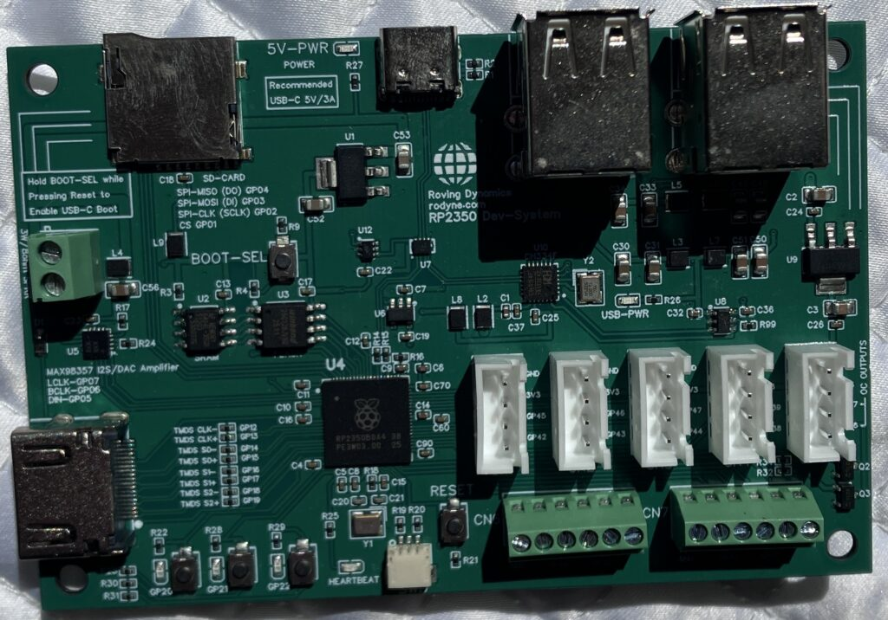
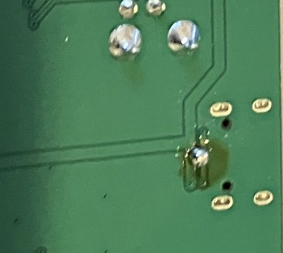

Just like publishing a book and going to print, passing your Gerber files to a PCB assembly house usually results in days and days of checking everything is correct, pushing the button, and immediately finding an error somewhere when it gets back. Kind of makes you wonder what the fuck you were doing during those hours and hours of checking!
I had been holding off pressing the button on this one due to the pathetic level of the NZ$, getting 2 of these baby’s assembled at JLPCB worked out at NZ$230 including exorbitant courier fees which I again I assume are because of our lousy exchange rate. Great for exporters and tourists, alas, not for me! Anyway, long story short, I am now $230 poorer, and here is the board fresh back from the assembly house, and looking like a charm.

Of course, plugging the USB power cable into it did nothing, no led, no smoke, no loud pops, nothing! Actually I don’t usually mind fixing these easy faults, generally no brain required, but, and note to future self on naming nets, VBUS and 5V on a simple board like this are very likely the same net!

OK. So one very dodgy blob of solder later, we now have the VBUS and 5V nets connected.
Plugging the board in this time lit the LED, brought up the RP2350 boot loader, and mounted a drive on my laptop. Woohoo! I decided to use PicoMite to do the testing as it proved to be nice and straightforward to work with last time. I dropped the latest PicoMite uf2 firmware image onto the drive, and it copied over fine, then rebooted.
Unfortunately after the reboot I should have had a standard config PicoMite board running, but no, the boot-loader came up again, and Linux again saw the board as a USB drive. (sigh!)
This usually means the image (uf2 file) was broken, or a hardware problem between the RP3250 and the Flash Memory. Unfortunately it also of course means I have to some some real digging, with logic analyzers and the debug probe, which also means going in the unheated workshop in the middle of winter.
This might take some time! – groan!
Schematic Here for those that want to see if they can find the problem before me.
Update 7-July-2026
OK think I’ve found this next issue (and without going out to the cold damp workshop), yes it is another newbie mistake: VREG_FB and VREG_PGND are both floating and should be grounded. Interesting that the chip even powers up and mounts a boot drive considering we are only grounded via the thermal pad at the bottom! – Sometimes it is much nicer when things fail harder than this, as it took about 3 hours with the debug probe, VS Code (VSCodium) debug console and a smart-arse AI to finally figure out it was much more serious than a bad firmware image.
Note: AI’s are still not as smart as we believe, I gave Gemini pro the schematic above (same as you) at the start of our session, telling it I had a hardware bug I think and it happily took me through 3 hours of pissing about on the VS code debugger before I told it I found the problem with VREG_PGND not being connected, it literally then told me VREG_FB should also be grounded too. Seriously, take away from this what you will!
With only 0.4mm between pins this is really going to test my soldering skills to put a ground wire to both of these. While I am at redesigning version 2.0 I’m also going to take out my USB switching circuit using the D-Type latch, it just over-complicates the design for minimal gain.
Update 10-July-2026
What was I thinking!
Nope, not a chance in hell of me putting these two wires in; under the microscope the finest tip of my Hanko soldering iron, next to the pins, looks like I’m trying to send a text with a boxing glove. And while my hands look steady holding them in front of me now, they shake at least 1 or 2mm under the microscope. I’m just not cut out for fine SMT rework, and I’ve definitely damaged both boards beyond repair now with my terrible efforts.
The only real option for me now is to get another two boards made once I’ve fixed the errors and made the other changes I want; so alas dear reader this I’m afraid is going to be the end of this post. When hell freezes over and the NZ$ recovers a bit I may dig into a bit more of my pension savings and get another two boards made and do another post.
I was also going to post this on X but I currently cannot prove I’m a human! It seems my experiment with social media has failed after only 3 months, and my experiment with being a human has failed after 63 years!